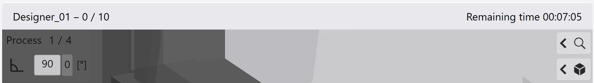

{kind=link}
Met deze module worden de buigdelen geproduceerd op de machine. De automatisch ingelezen gegevens voor het geselecteerde buigdeel worden toegepast en het buigdeel wordt overeenkomstig bewerkt. De geladen gegevens kunnen naar wens nog worden nabewerkt.
In het aanzichtvenster wordt de eerste processtap van het geselecteerde buigdeel isometrisch weergegeven. Als de machine correct geïnitialiseerd is en het deel is produceerbaar, dan verschijnt aan de bovenste en onderste rand van het aanzichtvenster een groene balk. Het symbool voor de bediening van het voetpedaal verschijnt rechts in beeld.
Informatie in het tekstgedeelte van het aanzichtvenster:
- Productnaam
- Aantal stuks
- Counter (actief, als doelhoeveelheid is ingevoerd)
- Resterende tijd (wordt actief, zodra het eerste deel is geproduceerd)
| Symbool | Betekenis |
|---|---|

|
Zoomfuncties |

|
Positionering |

|
Gereedschapsweergave |

|
Buigprocessen |

|
Meten |
| Symbool | Betekenis |
|---|---|
| Naar het eerste proces springen | |
| Een proces terug springen | |

|
Bedrijfsmodus Afzonderlijke stappen of Automatische modus kiezen |

|
Een proces verder springen |

|
Naar het laatste proces springen |

Hier worden de processtap, de buighoek en het aantal stuks weergegeven. Als een aantal te produceren stuks is geprogrammeerd, dan wordt ook de resterende tijd voor de bewerking weergegeven.
Button voor keuze tussen Automatisch bedrijf en Afzonderlijke stappen.
Bij het afwerken van de processen kan door tikken op deze button worden gewisseld tussen de Automatische modus en de modus Afzonderlijke stappen.
Info: Na het opstarten van de buigmachine werkt deze altijd in de automatische modus.
- Automatische modus
- Enkele stap
Als de middelste button niet gemarkeerd is, dan is de Automatische modus actief. In het tekstgedeelte van de kopregel verschijnt Produceren - Automatische modus.
Het programma start bij het huidige proces en werkt alle daarna volgende processen af. De procedure wordt zo lang herhaald, totdat het geprogrammeerde aantal stuks is bereikt. Als geen aantal stuks geprogrammeerd is, dan wordt het programma zo lang herhaald, totdat u het afbreekt.
Als de middelste button groen gemarkeerd is, dan is de modus Afzonderlijke stappen actief. In het tekstgedeelte van de kopregel verschijnt Produceren - Afzonderlijke stappen.
Hetzelfde buigproces wordt steeds uitgevoerd, totdat het volgende buigproces wordt geselecteerd. Er kan door de processen worden genavigeerd en deze kunnen na elkaar worden afgewerkt.
In deze modus is de teller voor het aantal stuks niet geactiveerd, ook niet als er wel een aantal stuks geprogrammeerd is. Als de button weer gebruikt wordt, schakelt de software weer over naar automatisch bedrijf.